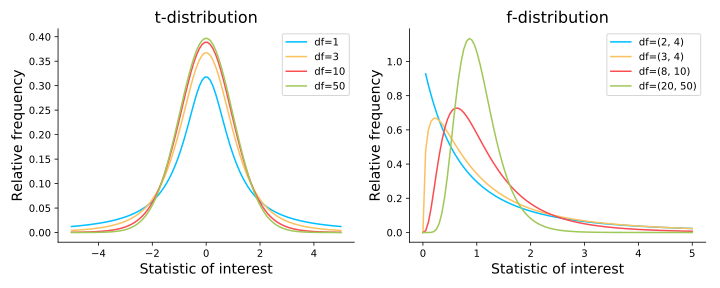

Bonjour, I'm Guillaume

Assistant Project Scientist
: Medicine Department
Developped the initial LS40 class (pilot class of STATS13, spring 2017)
Statistics is all about the sampling distribution
Every statistical test consists of studying how far from the center of the sampling distribution is the observed data we collected in the first place.
Formula-based statistics requires us to know which equation to apply to describe the sampling distribution relevant to our study (1 group? two groups? more than two groups?).

Resampling-based statistics involves using the exact same procedure to compute the sampling distribution and does not require any assumption about the data. It is a general method that you can apply to every situations and even to situations for which there is no theory about (Have you heard of a t-test for median? No, me neither)
Toward a randomization-based statistic curriculum